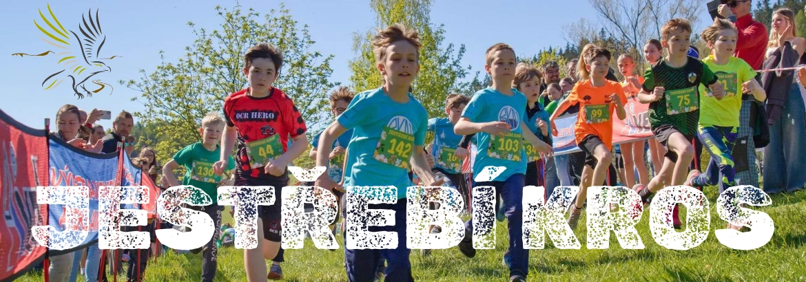
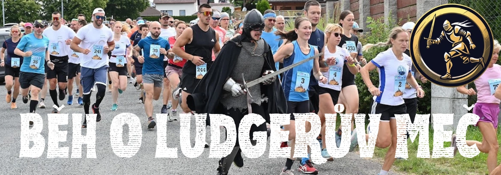
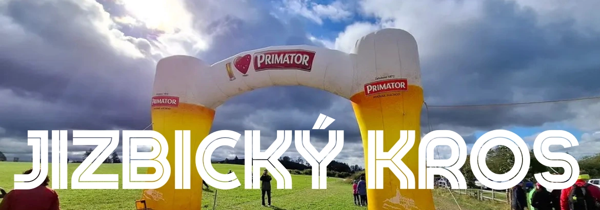

Děti v této věkové kategorii mají již rozmanité činnosti a povinnosti. Krom běžecké abecedy a základních atletických návyků je vedeme k samostatnosti a k sestavování svých běžeckých rituálů. Ukazujeme jim závodní prostředí i to, jakým způsobem k závodění přistupovat. Hlavním cílem této skupiny je připravit mládež k bezpečnému a samostatnému sportování, a to jak po fyzické, tak i mentální stránce. Z tohoto důvodu absolvují naši mladí skorodospěláci krom základního atletického tréninku i trénink mentální. Mentální trénink se pomalu a jistě stává běžnou součástí tréninků nejlepších sportovců, a proto i my se chceme připojit k tomuto nezbytnému prvku sportování a života celkově. Naši svěřenci se postupně dostávají k informacím, jak zacházet s emocemi, jak správně dýchat, nebo jak vlastně funguje náš mozek. Díky těmto informacím mohou postupně uchopovat nejen své fyzické ale také své psychické schopnosti a mít možnost dosáhnout svých nejlepších výkonů jak ve sportu, tak i v životě. Svěřenci se dále zúčastňují doprovodných akcí klubu jako jsou soustředění, sportovní výlety anebo individuální tréninky.
Co očekáváme od mladých atletů?
Pravidelnost chození na trénink: Běžecký klub není „holubník“. Uvědomujeme si, že v dnešní době je spoustu zájmů a možností a někdy chcete vy a Vaše dětí být prostě „všude“. Běžecky klub je ale oddíl a ten funguje jinak než kroužek ve škole. V případě že Vaše dítě není nemocné, nebo z výjimečných důvodů nemůže dorazit, prosíme o účast. V případě že dítě provozuje i jiné sportovní aktivity, ve kterých se chce rozvíjet, je možné, vytvořit individuální plán.
Samostatnost a svědomitost:
Od našich mladých atletů již očekáváme velkou samostatnost, svědomitost a disciplínu. Vše, co jim nabízíme, je v našem volném čase. Z tohoto důvodu očekáváme, že si našeho času budou vážit tak, jako si my vážíme toho, že svůj čas se rozhodli trávit s námi. Naše svěřence vnímáme již jako dospělé, a proto se chceme vyhnout přílišnému napomínání a připomínání. Spoléháme na jejich svědomitost a svobodné rozhodnutí. V případě, že se rozhodnou připojit k nám, očekáváme již větší píli a soustředěnost v průběhu celého tréninku.
Komunikace:
Očekáváme jasnou a zřetelnou komunikaci. V této věkové skupině chceme v první řadě komunikovat s našimi atlety o tom, jaká jsou jejich očekávání v rámci atletiky. Kde jsou jejich cíle a preference. Podle toho se na ně také díváme v rámci celého tréninku. Máme místo pro všechny, kteří chtějí zdravý pohyb brát vážně. Ať již je to směr, který chce směřovat k vrcholovému sportu anebo „pouze“ ke zdravému pohybu bez výkonnostního cíle.
Placení členských příspěvků a účast na závodech: Jsme mladý klub, který není napojen na žádnou zastřešující organizaci. Z tohoto důvodu jsme závislí na včasném zaplacení členských příspěvků. Dalším důležitým bodem je absolvování šesti atletických závodů ročně, které jsou vypsané Českým atletickým svazem. V případě, že naši atleti absolvují šest závody vypsaných atletickým svazem ročně, dosáhneme jako klub na dotace, které umožní chod celého klubu.


Sledujte život našeho klubu
Aktuální příspěvky z Facebooku Běžeckého klubu Náchod
Námi pořádané závody


